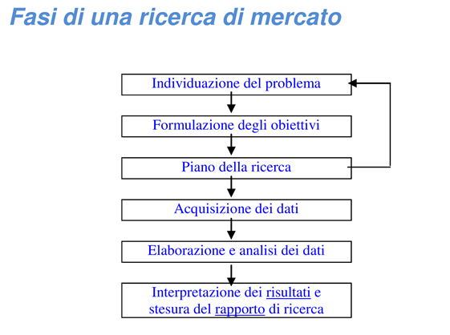
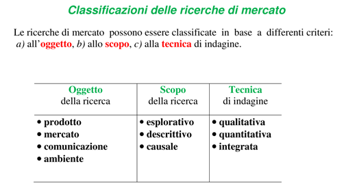
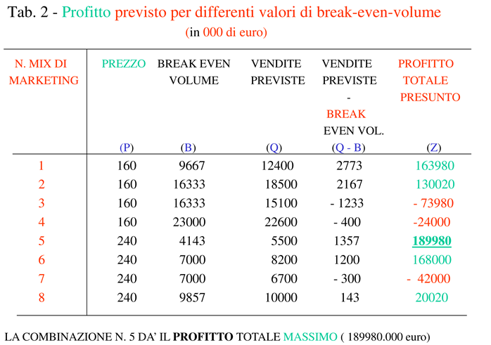
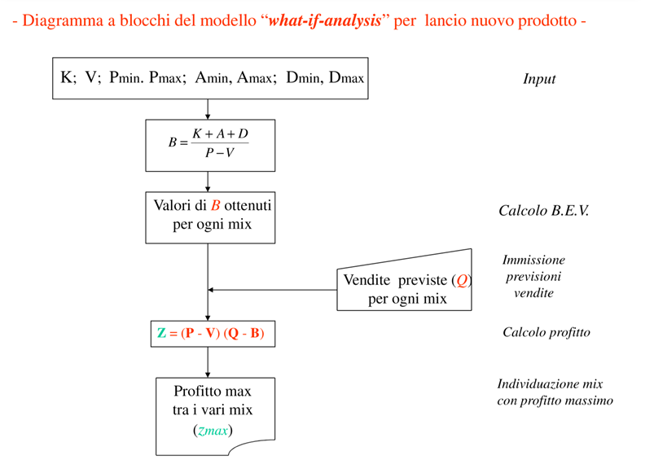
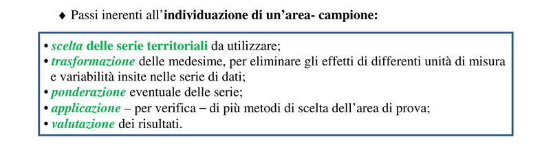
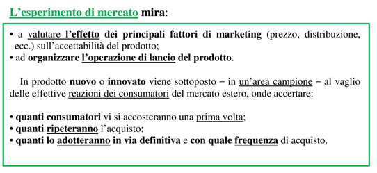
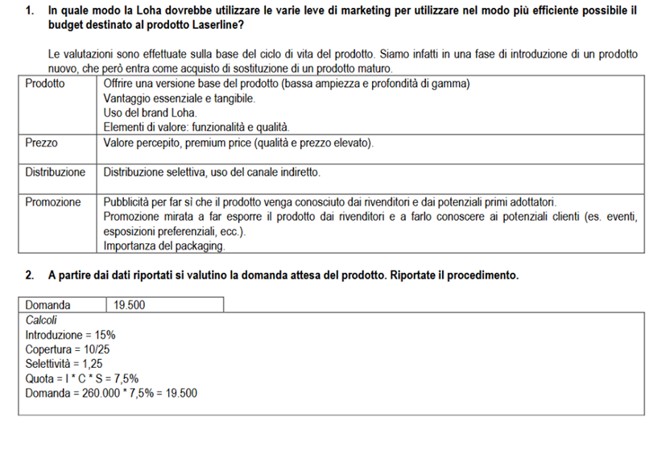

Committente vs ricercatore 2 aspetti
problematici: il committente non ha conoscenze di metodologie, dall'altro
occorre tradurre i risultati statistici in informazioni economiche utili per il
committente.
Quindi questo problema riguarda la comunicazione tra i due
soggetti (oggetti grafici diminuiscono i problemi di comunicazione).
1.
Individuazione del problema
2.
Formulazione degli obbiettivi
3.
Piano della ricerca
4.
Acquisizione dei dati
a.
Pre-test:
questionario pilota in cu valuto eventuali errori.
5.
Elaborazione e analisi dei dati
6.
Interpretazione dei risultati e stesura del rapporto di ricerca.
a.
Finalità
b.
Descrizione popolazione osservata
c.
La tecnica di raccolta dei dati
d.
L'epoca di rilevazione
e.
Il piano di campionamento
f.
I criteri di stima adottati
g.
I risultati in forma grafica
h.
Accuratezza delle stime
i.
La struttura dei costi dell'indagine
j.
Le conclusioni


-
Descrittive (descrivere ambiente abbastanza strutturato)
-
Osservazionali (ambiente poco conosciuto esplorato con
campionamento)
-
Causali (relazione causa effetto)
-
Name test
-
Package test
-
Copy test
-
Area test
Costumer Audit
-
panel consumatore
-
panel negozi
N.B. panel = indagine continuative
Altre indagini (una tantum):
-
Brand image
-
Test sulla pubblicità
-
Customer satisfaction
Obiettivi del modello per
il lancio di un nuovo prodotto di Kotler:
1) individuazione del marketing-mix ottimale (migliore
combinazione dei 4 fattori di marketing), basata sul calcolo del
break-even-volume corrispondente a diverse combinazioni di modalità dei 4
fattori
2) calcolo del profitto massimo atteso per varie combinazioni dei
fattori di marketing-mix.
VOLUME DI
PAREGGIO:
dove:
K: costi fissi = quota annua di ammortamento (di durata 5 anni) + spese generali ed amministrative(annue)
A= investimenti in pubblicità nella fase di lancio
D= investimenti in distribuzione
P= prezzo unitario al pubblico
V= costi variabili unitarie (mano d'opera + materie prime)
DIMOSTRAZIONE
Indicando con:
P: prezzo unitario del prodotto
Q: volume (numero di unità) da produrre per il prodotto in studio
V: costo variabile unitario
F: costo fisso complessivo
C: costi totali (fissi + variabili) complessivi
R: ricavo complessivo
Si ha che:
Da queste due relazioni troviamo il punto di pareggio uguagliando
Dal quale ricaviamo che
t.c. M= Margine di contribuzione unitario
Per ottenere il marketing-mix ottimale (profitto massimo) si
considerano le unità (q) di vendita previste del prodotto, corrispondenti ad
ogni combinazione delle variabili di marketing di tab.
1.
-il profitto totale (Z) è dato dalla relazione:
cioè: profitto è dato dal profitto unitario (P -V) moltiplicato
per la differenza (Q -B).
-in tab. 2 si riporta il valore di Z per
le varie combinazioni delle variabili di marketing (v = 100; k = 380.000).


Il Concept test è un processo basato su metodi quantitativi e
qualitativi, volto a valutare la risposta dei consumatori all'introduzione di
un nuovo prodotto sul mercato.
La ricerca è finalizzata a testare la validità di un'idea
imprenditoriale.
La rappresentatività dell'area di prova deve essere misurata con
riferimento ad un insieme di caratteristiche socio-demografiche
ed economiche.


-
tipo di prodotto
-
disponibilità di serie territoriali disaggregate (comunali
provinciali ecc.) al livello richiesto
-
metodo delle aree medie:
o
consiste nel determinare la media di ciascuna variabile
considerate e si sceglie quell'area che presenta di tali variabili piu prossimi
a quelli medi
-
metodo delle aree mediane:
-
metodo delle aree differenziali:
La Loha è una multinazionale che produce apparecchiature per l’edilizia (trapani, avvitatori, motoseghe, ecc.), che vengono venduti in numerosi paesi europei. L’azienda sta per lanciare sul mercato un nuovo modello di misuratore, denominato Laserline, progettato incorporando tutte le ultime innovazioni, tra cui la possibilità di effettuare misurazioni anche attraverso superfici. Tale soluzione consente ad esempio di poter misurare la distanza di una tubazione dalla superficie di una parete per verificare che una foratura non comporti rischi di funzionamento. Il prodotto, in linea con il posizionamento generale della Loha, si posizionerà nella fascia alta del mercato e andrà a sostituire con le proprie vendite di primo acquisto un vecchio modello ormai ritenuto obsoleto. I prodotti della Loha sono da sempre caratterizzati da un prezzo elevato, alta qualità di prodotto e grande affidabilità. Il prodotto quindi, per quanto innovativo, si ritiene che beneficerà della notorietà del marchio e verrà recepito come naturale sostituto dei prodotti offerti fino ad oggi dall’azienda. La Loha ha preso in considerazione il mercato Europeo (25 paesi), dove il prodotto sarà lanciato prossimamente, e ha valutato che il mercato dei misuratori ha una dimensione complessiva di 260.000 unità. Tuttavia la Loha non opera in tutti questi paesi, ma soltanto in 10, poiché ha volutamente scelto di non competere negli altri, dove la concorrenza è particolarmente agguerrita, l’ingresso per produttori nuovi è molto difficile e i margini ottenibili non sono sufficientemente elevati per giustificare tale decisione. I paesi sono stati selezionati anche considerando che questi 10 paesi sono i più ricchi dell’Unione, e sono quindi caratterizzati da una disponibilità di acquisto superiore alla media, oltre ad essere i più grandi, infatti le vendite complessive di misuratori sono il 25% in più rispetto alla media europea. In ciascun paese la Loha opera attraverso un distributore esclusivo; pertanto si può ritenere che abbia 10 clienti. Nei paesi dove opera la Loha, i suoi prodotti costituiscono mediamente il 15% di tutti i misuratori acquistati, dimostrando una buona presenza in questi mercati, soprattutto considerando il posizionamento dei prodotti. In questi paesi l’acquisto di misuratori avviene principalmente per sostituzione di prodotti obsoleti, fenomeno in crescita grazie anche alla vita ridotta dei prodotti più recenti
